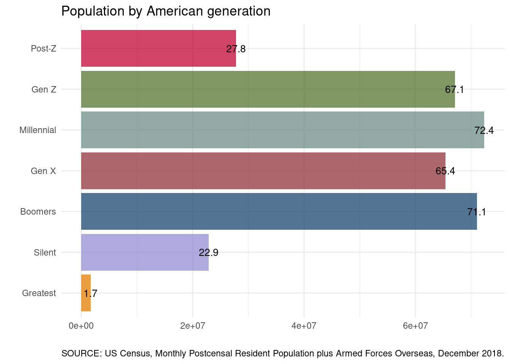
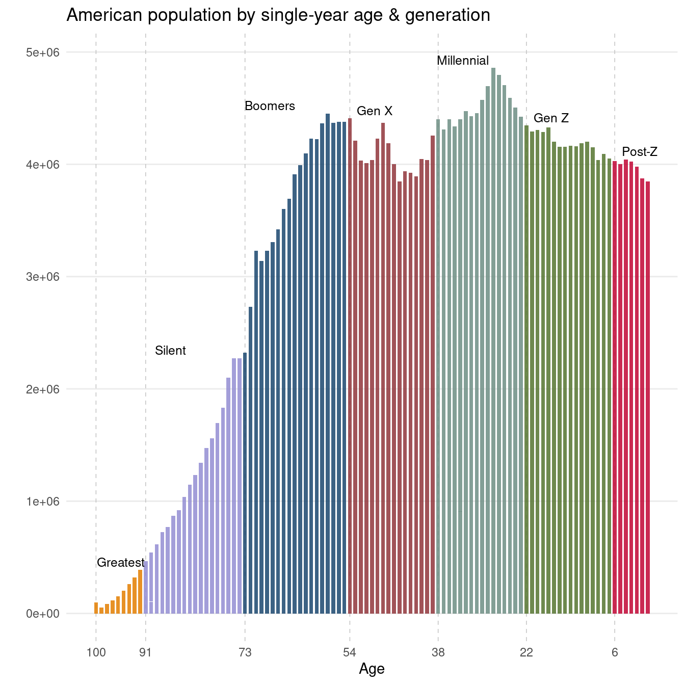
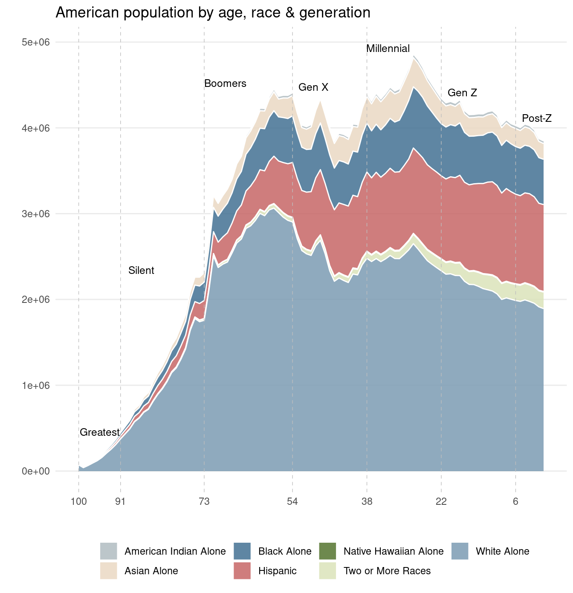
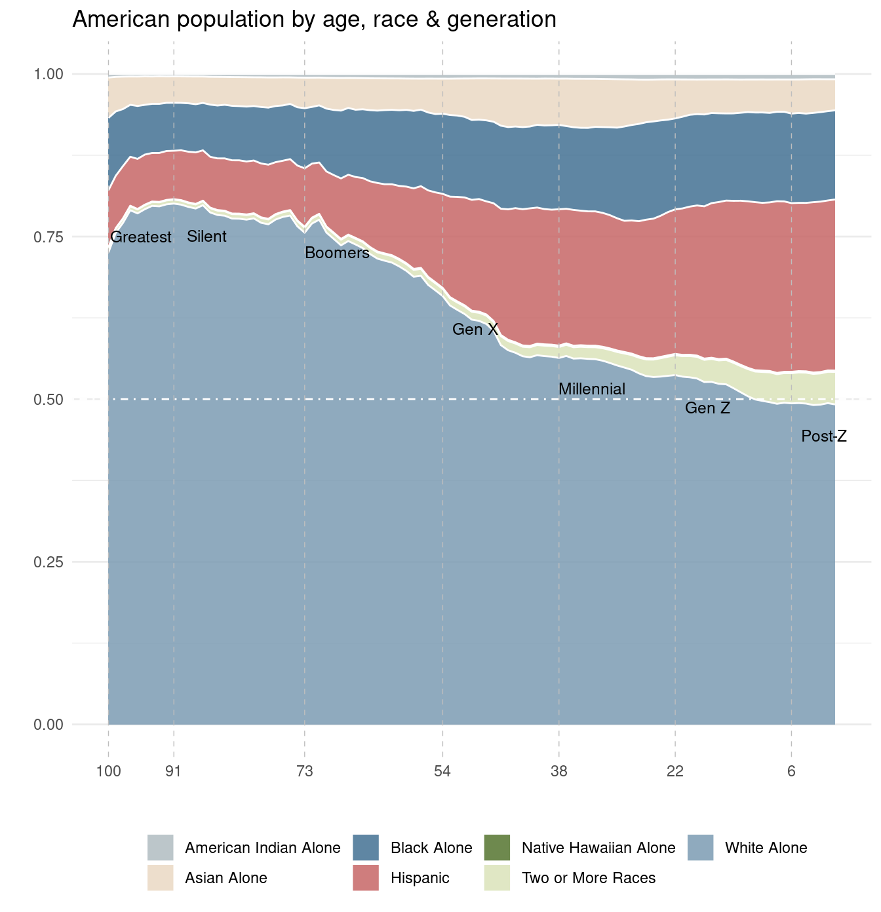

library(tidyverse)
gen <- c('Post-Z', 'Gen Z', 'Millennial',
'Gen X', 'Boomers', 'Silent',
'Greatest')
range <- c('> 2012', '1997-2012', '1981-1996',
'1965-1980', '1946-1964', '1928-1945',
'< 1927')
gen_desc <- data.frame(rank = 7:1,
gen = gen,
range = range,
stringsAsFactors = FALSE) %>%
arrange(rank)A quick look at the composition of American generations. Per Pew Research definitions & US Census data.
1 American generations
A summary:
Four of America’s seven living generations are more or less “complete,” and only getting smaller (albeit at different rates): Greatest, Silent, Boomers, and Gen X. The generation comprised of Millenials is complete as well, in that it has been delineated chronologically; however, the group likely continues to grow via immigration.
While Gen Z has been tentatively stamped chronologically by the folks at Pew Research, only the very eldest in the group have just entered the work force. So lots can happen still. And although we include them here, the Post-Z generation is mostly but a thought; half of the group has yet to be born.
2 Monthly US population estimates
Monthly Postcensal Resident Population plus Armed Forces Overseas, December 2018. Made available by the US Census here. The census has transitioned to a new online interface, and (seemingly) many data sets have been discontinued. Hence, the data set utilized here is slightly dated.
pops <- read.csv (
url('https://www2.census.gov/programs-surveys/popest/datasets/2010-2018/national/asrh/nc-est2018-alldata-p-File18.csv')) %>%
filter(MONTH == '12' & YEAR == '2018') %>%
gather(key = 'race', value = 'pop', -UNIVERSE:-AGE)A more detailed description of the population estimates can be found here. Note: Race categories reflect non-Hispanic populations.
race <- c('NHWA', 'NHBA', 'NHIA',
'NHAA', 'NHNA', 'NHTOM', 'H')
race1 <- c('White Alone',
'Black Alone',
'American Indian Alone',
'Asian Alone',
'Native Hawaiian Alone',
'Two or More Races',
'Hispanic')
labels <- data.frame(race = race,
race1=race1,
stringsAsFactors = FALSE)
search <- paste(paste0('^',race, '_'), collapse = '|')The following table details a random sample of the data set – with Pew Research defined generations & estimated year-of-birth.
gen_pops <- pops %>%
filter(grepl(search, race)) %>%
mutate(race = gsub('_.*$', '', race)) %>%
group_by(AGE, race) %>%
summarise(pop = sum(pop))%>%
left_join(labels) %>%
filter(AGE != '999') %>%
mutate(yob = 2019 - AGE) %>% ##
mutate (gen = case_when (
yob < 2013 & yob > 1996 ~ 'Gen Z',
yob < 1997 & yob > 1980 ~ 'Millennial',
yob < 1981 & yob > 1964 ~ 'Gen X',
yob < 1965 & yob > 1945 ~ 'Boomers',
yob < 1946 & yob > 1927 ~ 'Silent',
yob < 1928 ~ 'Greatest',
yob > 2012 ~ 'Post-Z')) %>%
left_join(gen_desc) %>%
ungroup() %>%
select(gen, rank, range, race,
race1, yob, AGE, pop)
set.seed(999)
gen_pops %>% sample_n(7) %>%
select(gen, range, race1:pop) %>%
DT::datatable(rownames = FALSE, options = list(dom = 't',
scrollX = TRUE))3 Composition of American generations
3.1 Population by generation
The figure below summarizes the US population by generation. These numbers will vary some depending on the data source. Millenials constitute the plurality of Americans, more recently overtaking a Boomer generation on the wane.
gen_pops %>%
group_by(gen, rank) %>%
summarize(pop = sum(pop)) %>%
mutate(lab = round(pop/1000000, 1)) %>%
ggplot(aes(x = reorder(gen, rank),
y = pop,
fill = gen)) +
geom_col(show.legend = FALSE,
alpha = 0.75) +
geom_text(aes(label = lab),
size = 3.5)+
theme(axis.text.x=element_blank(),
axis.ticks.x=element_blank())+
xlab('') + ylab('') +
coord_flip()+
ggthemes::scale_fill_stata() +
theme_minimal() +
labs(title = 'Population by American generation',
caption = 'SOURCE: US Census, Monthly Postcensal Resident Population plus Armed Forces Overseas, December 2018.')`summarise()` has grouped output by 'gen'. You can override using the `.groups`
argument.
3.2 Population by single year of age & generation
gg <- gen_pops %>%
group_by(yob, AGE, gen) %>%
summarize(tot = sum(pop)) %>%
group_by(gen) %>%
mutate(tot = max(tot)) %>% #For labels below.
filter(yob %in% c('1919', '1928', '1946', '1965',
'1981', '1997', '2013'))`summarise()` has grouped output by 'yob', 'AGE'. You can override using the
`.groups` argument.The figure below illustrates the US population by single year of age, ranging from the population aged less than a year to the population over 100 (as of December 2018). Generation membership per single year of age is specified by color.
gen_pops %>%
ggplot(aes(x = AGE,
y = pop,
fill = gen)) +
geom_vline(xintercept = gg$AGE,
linetype =2,
color = 'gray',
size = .25)+
geom_col(show.legend = FALSE,
alpha = 0.85,
width = .7) +
annotate(geom="text",
x = gg$AGE - 4.5,
y = gg$tot + 70000,
label = gg$gen,
size = 3.25) +
xlab('Age')+
ylab('') +
theme_minimal() +
theme(legend.position="bottom",
legend.title = element_blank(),
panel.grid.major.x=element_blank(),
panel.grid.minor.x=element_blank(),
panel.grid.minor.y=element_blank()) +
ggthemes::scale_fill_stata()+
scale_x_reverse(breaks = rev(gg$AGE)) +
labs(title = 'American population by single-year age & generation')Warning: Using `size` aesthetic for lines was deprecated in ggplot2 3.4.0.
ℹ Please use `linewidth` instead.
3.3 Population by single year of age, race & generation
gen_pal <- c('#b0bcc1','#ead8c3', '#437193',
'#c66767', '#55752f', '#dae2ba',
'#7b9bb3')Next, we crosscut the single year of age counts presented above by race & ethnicity.
gen_pops %>%
ggplot(aes(x = AGE,
y = pop,
fill = race1)) +
geom_area(stat = "identity",
color = 'white',
alpha = 0.85) +
scale_fill_manual(values = gen_pal) +
geom_vline(xintercept = gg$AGE,
linetype =2, color = 'gray', size = .25)+
annotate(geom="text",
x = gg$AGE - 4.5,
y = gg$tot + 70000,
label = gg$gen,
size = 3.25) +
xlab('')+ ylab('') +
theme_minimal() +
theme(legend.position="bottom",
legend.title = element_blank(),
panel.grid.major.x=element_blank(),
panel.grid.minor.x=element_blank(),
panel.grid.minor.y=element_blank()) +
scale_x_reverse(breaks = rev(gg$AGE) )+
labs(title ='American population by age, race & generation')
3.4 White America on the wane
white_label <- gen_pops %>%
group_by(gen, AGE) %>%
mutate(per = pop/sum(pop))%>%
filter(race1 == 'White Alone') %>%
group_by(gen) %>%
mutate(per = max(per)) %>% #For labels below.
arrange(yob) %>%
filter(yob %in% c('1919', '1928', '1946', '1965',
'1981', '1997', '2013'))The last figure illustrates a proportional perspective of race & ethnicity in America by single year of age. Per figure, generational differences (at a single point in time) can shed light on (the direction of) potential changes in the overall composition of a given populace. As well as a view of what that populace may have looked like in the past.
gen_pops %>%
group_by(gen, AGE) %>%
mutate(per = pop/sum(pop)) %>%
ggplot(aes(x = (AGE),
y = per,
fill = race1)) +
geom_area(stat = "identity",
color = 'white',
alpha = 0.85) +
geom_hline(yintercept = .5,
linetype = 4,
color = 'white') +
scale_fill_manual(values = gen_pal) +
geom_vline(xintercept = gg$AGE,
linetype = 2,
color = 'gray',
size = .25)+
annotate(geom="text",
x = gg$AGE-4.5,
y = white_label$per - .05,
label = gg$gen,
size = 3.25) +
xlab('')+ ylab('') +
theme_minimal() +
theme(legend.position="bottom",
legend.title = element_blank(),
panel.grid.major.x=element_blank(),
panel.grid.minor.x=element_blank()) +
scale_x_reverse(breaks = rev(gg$AGE)) +
labs(title = 'American population by age, race & generation')
4 Summary
Some different perspectives on the composition of America & American generations.